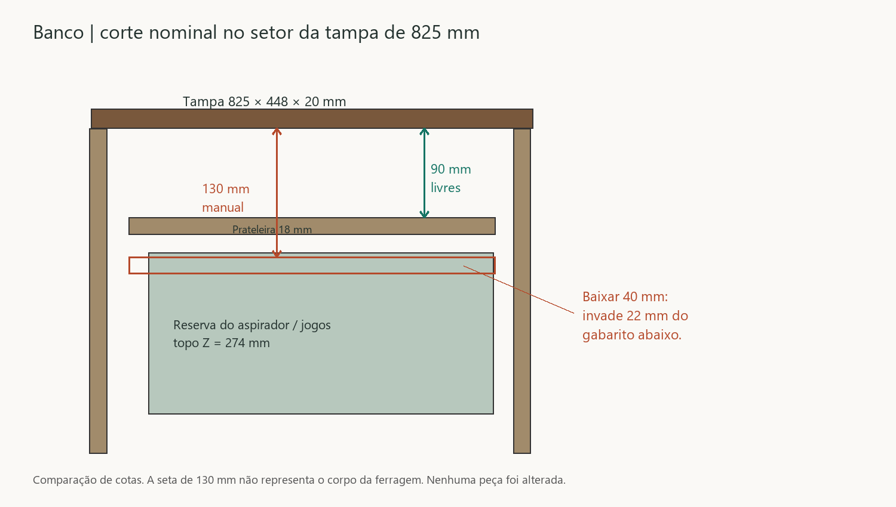
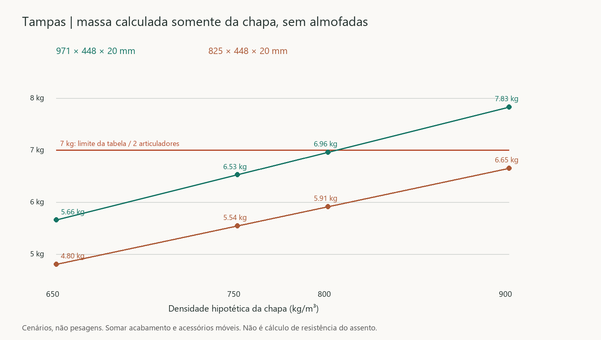

Estudo dimensional R45 — gavetas e tampas do banco
23/10/2026. Estudo separado da R44, que permanece vigente e preservada. Nenhuma medida real do apartamento foi presumida. O modelo de estudo contém 129 objetos; a geometria copiada serve à análise, não à fabricação.
Resultado principal
- Gavetas: sete têm profundidade nominal suficiente para a família FGVTN escolhida; as duas do escritório continuam 8 mm aquém na R44. A variante R04 oferece 432 mm livres, 12 mm além do mínimo de 420. Encaixe real de perfis/engates ainda não fechado.
- Tampas: 182 posições nominais (0–90°, passo 1°, duas tampas) sem interseção volumétrica acima de 0,1 mm³ contra o contexto copiado do banco e a outra tampa fechada, com almofadas removidas. Isso verifica o eixo ideal existente, não a cinemática de dobradiças reais.
- Banco / ferragem: a tampa menor tem somente 90 mm até a prateleira; o manual Slow Multi pede 130 mm de altura mínima de montagem. Faltam 40 mm nessa região. A tampa maior pode ultrapassar os 7 kg admitidos pela tabela, dependendo da chapa e do acabamento.
Respostas FGVTN conferidas no Outlook
Busca em 23/10 por FGVTN desde 21/10, sem página adicional. Localizadas duas respostas do SAC em 22/10: às 09:31:34 de São Paulo, envio dos STEP aberta/fechada da 54FGOC12400TSX0; às 09:42:25, informação de que não têm ferragem para o cesto consultado. Metadados dos anexos conferidos. São os mesmos arquivos registrados na R44; nenhum desenho novo dos engates foi localizado nessa busca. Não houve envio de mensagem.
Os anexos não confirmam explicitamente datum de instalação, engates, parafusos, destravamento ou recortes traseiros. O STEP de 400 não foi escalado para representar o de 500 mm. Registro anterior e fontes.
1. Gavetas: cotas que já podem ser fechadas como estudo
Recalculadas larguras entre faces internas das laterais e profundidades entre frente da carcaça e face interna do fundo no arquivo R44 aberto. Resultados coincidem com o levantamento anterior.
| Local | Quantidade | Profundidade livre | Mínimo da família | Margem |
|---|
| Roupeiro | 4 | 550 mm | 520 mm | +30 mm |
| Cozinha | 3 | 572 mm | 520 mm | +52 mm |
| Escritório R44 | 2 | 412 mm | 420 mm | −8 mm |
| Escritório variante R04 | 2, alternativa às anteriores | 432 mm | 420 mm | +12 mm |
Pelo desenho Set24, largura interna da caixa = A−41, tolerância +1/−0,5 mm, com lateral até 16 mm. Para laterais de 15 mm, a caixa externa nominal resulta A−11. Isso fornece 5,5 mm de folga por lado quando centrada; na faixa de tolerância de largura, 5 a 5,75 mm por lado. Não é folga do engate nem tolerância liberada para cada peça isoladamente.
| Local | Vão A | Largura interna nominal | Faixa documental | Largura externa com laterais 15 |
|---|
| Roupeiro | 355 | 314 | 313,5–315 | 344 |
| Cozinha | 583 | 542 | 541,5–543 | 572 |
| Escritório | 364 | 323 | 322,5–324 | 353 |
Dimensões em mm. As sete gavetas de 500 mm foram conferidas quanto a essas cotas; não receberam perfis/engates novos nem ensaio mecânico equivalente ao de 400 mm.
Escritório: capacidade e tolerâncias
A variante R04 mantém base útil 323 × 364 mm, altura de conteúdo 60,4 mm na inferior e 54 mm na superior: 7,101 L e 6,349 L. São prismas de referência, não volumes certificados de carga. Repetido o ensaio conservador dos volumes de conteúdo ao longo de 0–378 mm e regulagem 0–3 mm, contra carcaça e envelopes da outra gaveta: nenhuma interseção acima de 0,01 mm³. O relatório R04 anterior contém o ensaio das madeiras e fixações; nesta etapa não se declara que o perfil real passou nesse ensaio.
As folgas verticais mínimas do conteúdo são apenas 1,6 e 1 mm. Num exemplo de acúmulo desfavorável de dois erros de 0,5 mm, restariam 0,6 e 0 mm. Com três erros de 0,5 mm, restariam 0,1 e −0,5 mm. Esses valores ilustram o orçamento de tolerâncias; não são tolerâncias industriais assumidas. A montagem precisa ter margem definida pelo fabricante/marceneiro antes de fechar altura das caixas e furação.
Corrediça recebida: o que foi efetivamente testado
Reproduzida a hipótese rejeitada na R44: plano Y=0 do STEP junto à lateral X=4318, extremidade Z=148,5 da base em Y=676 e face X=30,6 do perfil móvel sob o fundo. O curso do estágio móvel é 374,3 mm e o intermediário 256,35 mm, extraídos dos arquivos recebidos. Usada somente a lateral fornecida.
Foram feitos 24 casos: duas gavetas × fechado/aberto × rebaixamentos de 0, 1, 2, 5, 10 e 12 mm do perfil, mantendo as caixas. Todos mantêm ao menos uma interferência. Abaixar o perfil também perde a hipótese de apoio no fundo; esse ensaio é diagnóstico de sensibilidade, não uma proposta de montagem. Não é possível concluir incompatibilidade geral da ferragem a partir dessa orientação ainda não confirmada.
Conclusão: não recortar a madeira para acomodar essa posição por tentativa. Próximo dado necessário é o datum correto do conjunto e o desenho dos engates/recortes. A caixa R04 continua alternativa dimensional, sem incorporação como solução mecânica concluída.

2. Banco: abertura e implantação
Mantidas duas tampas de 971 × 448 × 20 e 825 × 448 × 20 mm, junta longitudinal de 2 mm sobre a divisória de 18 mm. Apoio geométrico nominal na divisória: 8 mm para cada tampa; isso não é cálculo de pressão ou resistência. Folga nominal ao encosto: 2 mm. Ambas alcançam Z=868 mm abertas a 90°, a partir do eixo ideal em Z=420 mm.
O ensaio amostral de 1° não encontrou colisões no contexto do banco. Não cobre pessoas, mãos, ferragens ausentes nem certifica todos os ângulos intermediários. A junta de 2 mm e o recuo de 2 mm devem receber tolerâncias de execução, acabamento e deformação.
Slow Multi: quantidade condicional e massa
O manual arquivado indica um articulador até largura de 700 mm/peso 3,5 kg e dois até 1.400 mm/7 kg, com 210 < H < 500 mm. As duas tampas têm largura acima de 700 e profundidade H=448; a hipótese é dois por tampa, quatro no total, condicionada à massa acabada e à montagem. Não há aprovação de quatro peças para compra.
| Densidade hipotética | Tampa 971 mm | Margem até 7 kg | Tampa 825 mm | Margem até 7 kg |
|---|
| 650 kg/m³ | 5,655 kg | 1,345 kg | 4,805 kg | 2,195 kg |
| 750 kg/m³ | 6,525 kg | 0,475 kg | 5,544 kg | 1,456 kg |
| 800 kg/m³ | 6,960 kg | 0,040 kg | 5,914 kg | 1,086 kg |
| 900 kg/m³ | 7,830 kg | excede 0,830 kg | 6,653 kg | 0,347 kg |
Massa = volume CAD × densidade. A chapa maior sozinha chega a 7 kg em aproximadamente 804,6 kg/m³; a menor, em 947,0 kg/m³. Somar acabamento e acessórios que se movam com a tampa. As almofadas devem ser retiradas. Não afinar a chapa apenas para entrar na tabela: o dimensionamento do assento é independente e não foi realizado aqui.

Altura de montagem versus armazenamento
Na tampa de 825 mm, a face inferior da tampa está em Z=400 e a prateleira em Z=310: apenas 90 mm. A altura mínima indicada no manual é 130 mm. Uma simples descida da prateleira em 40 mm colocaria sua face inferior em Z=252, cruzando 22 mm dos gabaritos do aspirador/jogos, que chegam a Z=274. Essa alternativa foi rejeitada; nada foi movido.
O fechamento deverá comparar um articulador com instalação que caiba no espaço disponível ou um detalhe local da prateleira que preserve armazenamento e resistência. Um recorte não está dimensionado nem aprovado nesta etapa, pois falta o envelope completo da ferragem. Sob a tampa maior também há objetos próximos às laterais: no setor dos potes, a reserva começa 10 mm após a face interna da lateral, enquanto a linha de referência da fixação superior fica 12 mm para dentro. Há conflito potencial de ocupação, a confirmar com o corpo real do mecanismo, não demonstrado como colisão de ferragem inexistente.
Referências de montagem marcadas no estudo
Aplicadas somente como marcações de estudo as cotas do desenho: eixo lateral a 40 mm do topo e 60 mm da face interna do fundo; furos laterais a 26/54 mm do topo (28 mm entre centros); indicação superior 188/204 mm desde a borda traseira assumida da tampa, em plano a 12 mm da face interna lateral. Recobrimento r e dobradiça real ainda precisam compatibilização. Marcadores não perfuram as peças.
Por causa da divisória compartilhada, a distância da borda da tampa à linha de montagem não é igual nas duas pontas: 29/20 mm na tampa de 971 e 20/29 mm na de 825. Não copiar automaticamente E+12 = 30 mm a partir de todas as bordas da tampa; o desenho deve ser referenciado às faces reais da carcaça e à dobradiça escolhida.
Entregas e limites
O arquivo abre no setor Banco. Para inspecionar as gavetas, oculte o grupo 01 — BANCO e exiba 02 — GAVETAS; ajuste a vista ao conteúdo. No modelo, grupos de hipóteses rejeitadas da corrediça, referências Slow Multi e tampas a 90° começam ocultos. Exibir separadamente. O grupo de caixas representa a variante R04, não as gavetas instaladas da R44. O estudo mantém coordenadas globais do apartamento.
Não houve fabricação, compra, redução do armazenamento, alteração do arquivo R44 ou contato com fornecedores. Faltam dados de produto e fabricação, além da conferência de campo futura; esses grupos de dependências não foram confundidos.
Fontes locais
- R44 consolidada, R04 das gavetas e STEP oficiais recebidos em 22/10 (hashes registrados nos cálculos e na pasta de fontes R44).
- FGVTN Oculta ET — instrução Set24, página única, inspecionada visualmente.
- FGVTN Slow Multi — montagem, página única, inspecionada visualmente. Documento de referência arquivado; não implica confirmação comercial atual.